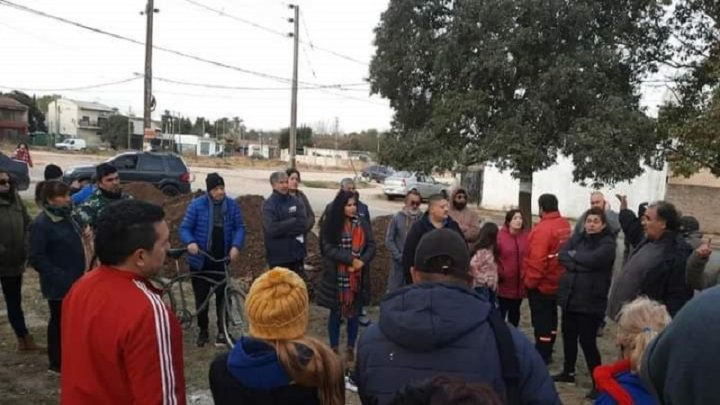
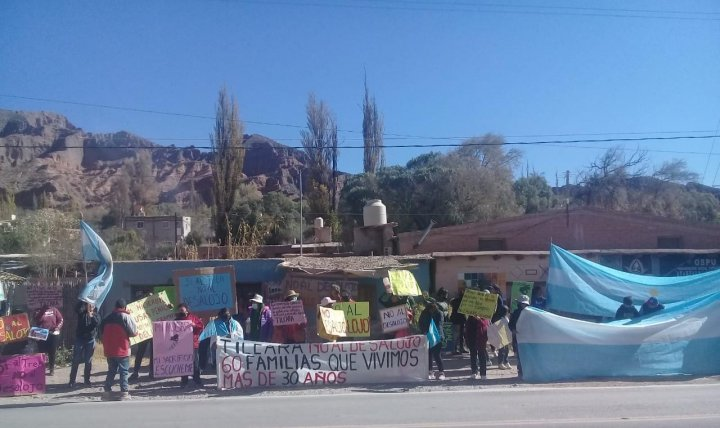

Noticias Del Día
La NASA junto a la Agencia Espacial Europea y la Agencia Espacial Canadiense, harán un lanzamiento conjunto de la herramienta astronómica que revolucionará el estudio del espacio.
Reclaman obras para que la Autopista Presidente Perón no los deje aislados, y puedan poder acceder fácilmente a las escuelas y centro de salud. Son mas de 5000 personas afectadas. El pasado 25/6 se reunieron con la Concejal PTS-FITU, elaboraron dos proyectos a presentar en el Concejo Deliberante y se movilizarán nuevamente.

El gobierno provincial, a través de la Policía, amenazan con desalojar a familias que viven hace más de 30 años en predios de lo que fue la Estación de Trenes del Ex Ferrocarril Belgrano. Denuncian causas penales y que Gerardo Morales aprovecha la reactivación de la obra del tren en la Quebrada para correrlos del lugar donde viven hace años. Vecinos llevaron adelante una acción sobre la ruta para visibilizar la situación y mañana movilizan.

El primer ministro italiano, Mario Draghi. aprobó el estado de emergencia por la sequía extrema en el norte de Italia, se trata de la peor crisis hídrica en 70 años, esto en el marco de meses con niveles de lluvia debajo de lo normal en el Mediterráneo, uno de los puntos rojos de la crisis climática.